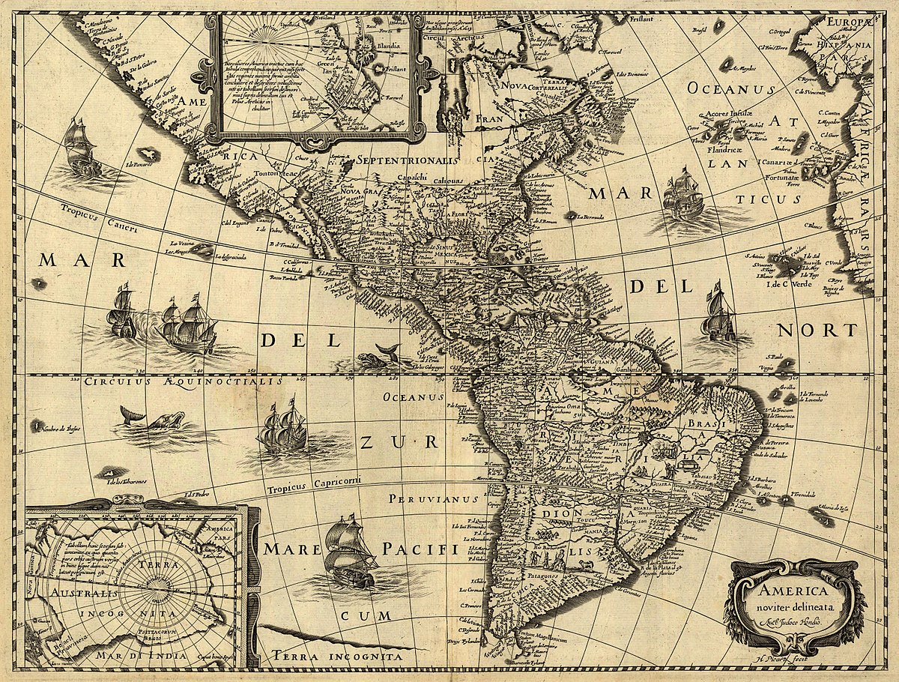
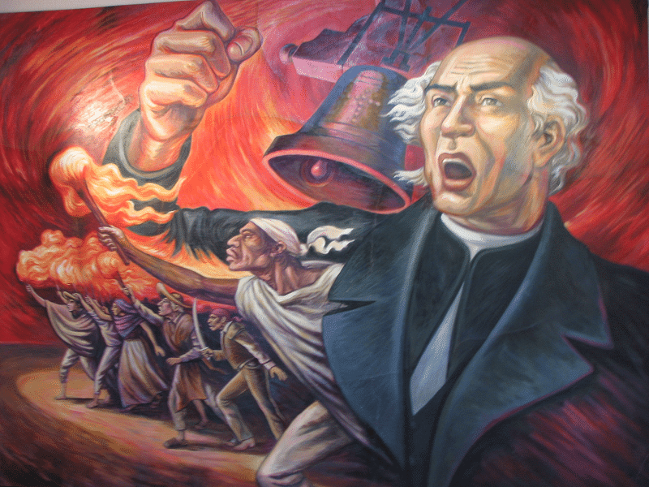
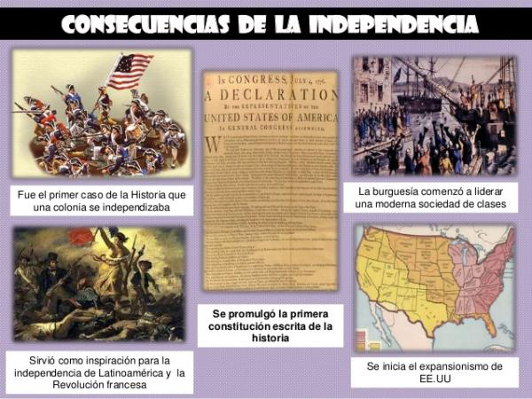

Lucha por la Independencia
Las nociones de libertad y nacionalismo surgieron, en América Latina, para fines del siglo XVIII. Antes de la independencia, el pueblo latinoamericano adquirió conciencia de las diferencias existentes entre las metrópolis y los territorios coloniales, y, con esta toma de conciencia, comenzó a manifestarse el sentimiento patrio y de identidad nacional. El concepto libertad adquirió gran significado con el nacionalismo, y la lucha por la libertad y la preservación de la identidad nacional se convirtieron en los estandartes de los pueblos latinoamericanos. El incipiente nacionalismo contribuyó, pues, a cuestionar el orden colonial prevaleciente. Estas posiciones de las colonias engendraron serias divergencias con las metrópolis, lo que contribuyó a allanar la ruta hacia la independencia.
La influencia de la ilustración
Las ideas de la ilustración, la Guerra de Independencia de Estados Unidos y la Revolución Francesa ejercieron gran influencia en los territorios coloniales de España en América. Gracias a la Enciclopedia de Diderot, las ideas de la ilustración fueron muy estudiadas entre los sectores educados de Latinoamérica, en especial, por miembros del clero y la burguesía criolla de Hispanoamérica. En estos sectores sociales, las ideas de libertad, igualdad, progreso y soberanía entre otras corrientes se difundieron rápidamente, así como las ideas de Rousseau, Bayle, Montesquieu, Voltaire y Rainal. Sin embargo, la mayoría de la población no entró en contacto con estas corrientes de pensamiento debido a factores como el analfabetismo y la fuerte censura prevaleciente contra todo aquello que representara un peligro para el Estado colonial.
Causas del preludio a la guerra de independencia
La ilustración sirvió de justificación ideológica para las guerras de independencia latinoamericanas, pero no fue exactamente la causa que la originó. Varias circunstancias inciden para provocar este acontecimiento:
• El fuerte control de los Borbones en todos los aspectos de la vida de las colonias.
• El desarrollo de la burocracia como signo de centralización de las funciones administrativas de la colonia, lo que originó la pérdida de las libertades municipales.
• La exclusión de los criollos de los cargos públicos (con el fin de minimizar su poder).
• Un desarrollo económico fundamentado en la dependencia.
• Los altos impuestos.
• La falta de recursos para mantener el imperio (España no tenía una adecuada fuerza militar y tampoco producía lo suficiente para satisfacer las demandas y necesidades económicas de sus colonias.).
Estas situaciones desencadenaron gran tensión y malestar entre los distintos sectores de las colonias hispanoamericanas. Sin embargo, los indios, los negros y los mulatos fueron los más afectados, pues resultaron oprimidos, además, por la clase criolla dominante.
Antecedentes de la lucha revolucionaria
Ante la agobiante situación social, y desde mediados del siglo XVIII, se desarrollaron serias convulsiones internas que pusieron de manifiesto la lucha de clases y la decadente administración colonial. Algunos de los movimientos más significativos son los siguientes:
•La rebelión de los comuneros del Paraguay, un movimiento de origen económico y político dirigido a combatir el poder de los jesuitas, quienes controlaban la Economía colonial, y regulaban el trabajo indígena. La protección de los jesuitas hacia los indios provocó choques con los terratenientes, quienes querían tener dominio sobre las tierras dominadas por los jesuitas, e interesaban tener acceso a la mano de obra guaraní. Por esta razón, los terratenientes se levantaron en rebelión contra el dominio de los jesuitas.
•El lanzamiento de Calatayud, en Cochabamba, un alzamiento mestizo y urbano contra la tributación obligada a indios y mestizos. Aunque se estableció el pago de tributos a todos los sectores sociales, éste recaía más sobre los indios. En un intento de equiparar estos pagos, el gobierno español determinó que los indios y mestizos, debían pagar lo mismo. Esta acción del gobierno colonial puso de manifiesto las diferencias sociales entre indios y mestizos y, por esta razón, los mestizos urbanos se alzaron contra el tributo.
•El levantamiento de los hermanos catarí, un levantamiento contra los abusos de los cobradores de tributo y el repartimiento.
•La revuelta contra la Compañía Guipuzcoana de Caracas, un levantamiento de la aristocracia latifundista contra el monopolio ejercido por esta compañía, y el. control absoluto sobre el precio de los productos, lo cual afectaba el desarrollo económico de los comerciantes criollos.
•El alzamiento indio de José Gabriel Tupac Amaru, contra los abusos de la mita y del trabajo obligatorio. Este se proclamó emperador del Perú, y declaró abolidos los repartimientos y la la mita. Los indios en la la mita tenían pésimas condiciones de trabajo, pues ésta implicaba largas horas de trabajo con sólo una hora de descanso. También, estaban mal alimentados, y la coincidencia de circunstancias provocó una. alta incidencia de mortalidad. Además, produjo el despoblamiento de regiones indígenas, por la emigración de trabajadores que huían de la la mita.
Todos estos alzamientos fracasaron por falta de organización técnica y de armamentos militares.
El conflicto politico español y la crisis de lealtad
La Invasión napoleónica a España se considera la causa precipitante de la guerra de independencia. La invasión francesa representó para España la pérdida de la unidad monárquica ya que los reyes Carlos IV y Fernando VII fueron obligados a abdicar la corona en favor de José Bonaparte. Con la ocupación francesa, el imperio español enfrentó una aguda crisis internacional e interna: las colonias americanas reafirmaron su lealtad al rey de España, Fernando VII, y siguiendo el ejemplo de España en Venezuela, Cuba, Puerto Rico, Chile y otros territorios coloniales, se establecieron juntas que juraron lealtad a la Junta de Sevilla. A pesar del apoyo inicial, en América, ya comenzaba a perfilarse una crisis de lealtad: ¿a quién serían leales? ¿al rey o a la Junta? Ante la ausencia del monarca, ¿tenía España poder sobre las colonias? , la élite criolla de México determinó que, ante la ausencia del rey, España no tenía ningún derecho que ejercer sobre América.
Basándose en el principio de que la soberanía radicaba en las instituciones criollas, las colonias comenzaron a tomar sus propias determinaciones políticas, lo que, implícitamente, representó una separación de España. En 1810, Caracas estableció la Junta Suprema de Caracas, compuesta por miembros de la élite colonial y del Consejo Municipal. Aunque la Junta declaró su lealtad al rey, no obstante, determinó controlar y gobernar la colonia sin la autorización del gobierno español. Era evidente que la élite colonial no estaba dispuesta a acatar la autoridad metropolitana en unos momentos en que, claramente, se reflejaba la debilidad del imperio español.
Por consiguiente, la élite criolla aprovechó la coyuntura internacional y la debilidad de España para declarar la independencia.
Lucha armada, Guerra civil, Grupos y Heroes nacionales
La Guerra de Independencia de los pueblos hispanoamericanos fue cruenta, encarnizada, y puso de manifiesto las luchas internas de poder entre la élite criolla. La clase dominante se fraccionó en distintos grupos de poder: patriotas realistas, centralistas, federalistas, moderados, liberales y conservadores. Por ejemplo, en Chile, el Congreso Nacional estaba dividido en grupos: moderados e independentistas (encabezados por Bernardo O'Higgins). En Venezuela, el Congreso Nacional mostró, también, diferencias entre los grupos políticos, sin embargo, los grupos a favor de la independencia dominaron. Francisco de Miranda y Simón Bolívar (ambos independentistas) organizaron, en 1810, la Sociedad Patriótica, con el fin de lograr la separación. Venezuela declaró la independencia en 1811, y redactó una constitución que adoptó la forma de gobierno republicano y federal, similar a la Constitución de Estados Unidos. Los conflictos internos y la movilización de las fuerzas españolas sofocaron y suprimieron la Primera República de Venezuela. Ante el fracaso venezolano, y las pocas posibilidades de lograr el apoyo de Nueva Granada para la recuperación de Venezuela, Bolívar decidió exilarse en Jamaica.
En México, los sectores populares más afectados por las luchas entre criollos y peninsulares fueron los indios y los mestizos. Ante las pésimas condiciones sociales y económicas del campesino indígena, el padre Miguel Hidalgo se levantó en rebelión, en 1810. El Grito de Dolores inició la guerra de independencia de México. Este movimiento era esencialmente indígena y campesino, y careció del apoyo de los sectores dominantes como la iglesia y la élite criolla. Ante la derrota y muerte de Hidalgo, en 1811, José María Morelos retomó la lucha armada. Para 1813, éste convocó el Congreso de Chilpancingo, y planteó la independencia absoluta de México. La causa libertaria de Morelos quedó truncada, en 1815, al ser capturado y ejecutado.
En la región de La Plata (Buenos Aires), la lucha entre criollos y peninsulares se vio afectada por otra fuerza externa que ejerció presión sobre la región: Inglaterra. En los años de 1806 y 1807, La Plata fue ocupada por Inglaterra. Esta ocupación provocó una crisis en la administración colonial, pero, también, estimuló el espíritu nacionalista de los porteños, y puso de relieve la fragilidad del imperio español. La única colonia en Sur América que mantuvo la adhesión y lealtad a España fue Perú. Razones de tipo social y racial contribuyeron a este hecho: la clase criolla peruana prefirió mantener la lealtad a España ante el temor de una alianza entre los mestizos y los indios, que eran numéricamente superiores a ellos, pues dicha alianza podía poner en peligro sus intereses económicos y sociales.
En el Caribe, Puerto Rico y Cuba también permanecieron leales a España. Sin embargo, en ambas islas, comenzó a perfilarse un movimiento a favor de la independencia. En Puerto Rico, por ejemplo, hubo una gran simpatía hacia la causa libertaria, y el pueblo puertorriqueño se negó a participar militarmente en contra de los hermanos latinoamericanos. Ante la solidaridad manifiesta de Cuba y Puerto Rico a la guerra de independencia, España decidió reforzar el sistema represivo en las islas con el fin de evitar levantamientos revolucionarios, y logró retener las islas.
Las colonias centroamericanas también se rebelaron contra España. De hecho, la primera provincia en declarar su independencia fue El Salvador. Al contrario de México, la rebelión centroamericana fue fundamentalmente elitista, y tuvo poca participación de los sectores populares. En 1823, el reino de Guatemala -compuesto por Guatemala, El Salvador, Honduras, Nicaragua y Costa Rica- declaró la independencia y en 1824, se organizó la República Federal Centroamericana. No obstante, la República Federal Centroamericana enfrentó serias dificultades que la llevaron finalmente al rompimiento que dio origen a las naciones que conocemos hoy. Para 1815, parecía que el movimiento independentista de las colonias españolas había fracasado. En 1816, las fuerzas expedicionarias de Pablo Morillo reprimieron con dureza a Nueva Granada y Venezuela. A pesar de la reacción antirrevolucionaria, comenzaron a resurgir fuerzas de resistencia, como las guerrillas. El movimiento independentista renació con el gran triunfo de la batalla de Boyacá, con el cual se liberó Nueva Granada, y se proclamó la formación de la República de la Gran Colombia, compuesta por Venezuela, Nueva Granada y Ecuador. Bolívar encargó la tarea de libertar al Ecuador al general Antonio José de Sucre, y ésta se completó en 1822.
Mientras la lucha bolivariana se recrudeció en el norte de Sur América, en Chile, las fuerzas realistas dominaban la región, y correspondió a José de San Martín la liberación de este país. En la batalla de Chacabuco, de 1817, San Martín derrotó a los españoles, pero fue en la batalla de Maipú cuando San Martín logró la independencia de la región. El triunfo revolucionario en Chile permitió el establecimiento de un gobierno encabezado por Higgins, y con su apoyo, San Martín preparó la campaña para conquistar Perú. En ese mismo año, Agustín de Iturbide, en México, proclamó el Plan de Iguala, que declaró la independencia de México. El encuentro de Bolívar y San Martín se produjo en Guayaquil. Como resultado de la entrevista, San Martín renunció a sus cargos, volvió a Chile, y emigró definitivamente a Europa, Bolívar recurrió a Sucre para la liberación del Alto Perú. La batalla de Ayacucho puso fin a las guerras de independencia, y, con la independencia del Alto Perú, nació Bolivia.
Al contrario de las guerras de Independencia de las colonias españolas, la independencia de Brasil no fue tan devastadora. Brasil se convirtió en la sede del gobierno portugués cuando Napoleón ocupó Portugal, y esta presencia fue importante en el desarrollo de la colonia: Río de Janeiro creció y se fortaleció económicamente, y Portugal permitió reformas económicas en Brasil que beneficiaron a los comerciantes brasileños. En el aspecto político, Brasil era regido como un estado autónomo; no obstante, en 1820, se produjo, en Portugal, un levantamiento que exigió la convocación a cortes y el retorno del rey Joao VI. Ante el retorno del rey, las cortes propusieron revocar el gobierno autónomo de Brasil, y esta situación provocó que el heredero al trono de Portugal, Pedro de Braganza radicado en Brasil se pronunciara en contra del gobierno de Portugal. Este determinó levantarse en rebelión, declaró la independencia, y se convirtió en el primer emperador de Brasil.
Efectos de la guerra
La lucha por la independencia tuvo serias implicaciones en los recién independizados territorios: la independencia no aseguró el fin de las guerras civiles, y los conflictos regionales se agudizaron luego de la guerra. Las tensiones sociales y raciales prevalecientes durante la guerra polarizaron las sociedades de los nuevos países. El poder político de las naciones independizadas fue débil, y promovió el desarrollo del caudillismo. Aunque la guerra terminó con el monopolio español, las naciones latinoamericanas quedaron a merced de la influencia económica de Estados Unidos e Inglaterra, que dominaban el mercado atlántico. Esto representó un problema adicional, pues el fuerte desarrollo económico de los norteamericanos resultaba demasiado competitivo para los países recién independizados. Además, en ellos, prevalecía un clima de confusión, desorganización e inestabilidad. El Congreso de Panamá no contó con el apoyo de todos los países Latinoamericanos. Luego de la independencia, las naciones latinoamericanas atravesaron serias dificultades de tipo político y económico que más bien generaron la digresión de los estados. Además, las potencias extranjeras como Estados Unidos veían con gran recelo la unidad latinoamericana, pues podía poner en peligro sus intereses sobre la región. Estas razones explican, en gran medida, por qué el Congreso de Panamá, de 1826, no logró su cometido, y el sueño bolivariano de la confederación de los nuevos estados americanos quedó inconcluso.
Después de la independencia, Guatemala buscó apoyo en México como aliado para poder mantener la oligarquía en el poder. Gabino Gaínza declaró su anexión a México e inmediatamente, Iturbide envió un ejército al mando del general Vicente Filísola, que fue muy bien recibido en la capital del reino. Pero se produjo una disensión: El Salvador se sublevó contra los mexicanos, y el ejército de Filísola se dirigió hacia aquella provincia, a la cual pudo someter. A la caída de Iturbide, Filísola volvió a Guatemala, donde la situación había cambiado, y se encontró muchos más partidarios de la separación de México y de una independencia total. Propuso convocar un congreso para decidir lo que había de hacerse. El congreso, reunido el 24 de junio de 1823 en Guatemala, declaró la independencia total. El reino de Guatemala pasó a llamarse Provincias Unidas de Centroamérica, y se nombró un gobierno provisional de tres miembros, encabezado por el doctor Pedro Molina, con la misión de redactar una constitución.
Cuando se redactó la constitución, de influencia norteamericana, en noviembre de 1824, el país pasó a llamarse República Federal Centroamericana. Esta estaba formada por cinco estados, que tenían, a su vez, poderes ejecutivos, legislativos y judiciales completamente autónomos dentro de sus límites territoriales. Las luchas de las oligarquías provinciales para mantenerse en el poder, y la de todos contra el intento centralizador de Guatemala, donde residía el gobierno nacional, llevaron a la disolución de la federación. El presidente, Manuel Arce, y el gobernador de cada provincia (en Costa Rica, Juan Mora Fernández; en Nicaragua, Manuel Antonio de la Cerda; en Honduras, Dionisio Herrera; en El Salvador, Juan Vicente Villacorta; en Guatemala, Juan Barrundia), todos ellos pertenecientes a la oligarquía terrateniente, organizaron gobiernos provinciales fuertes y poco a poco fueron separándose del gobierno central. Nicaragua, Honduras y Costa Rica se declararon independientes en 1838, Guatemala, en 1839, y El Salvador se independizó en 1841.
Comienzos de la independencia
Al concluir el siglo XIX, América Latina quedó dividida en 19 naciones y unos territorios incorporados, inmersos en un proceso de formación de nacionalidades que se caracterizará por la violencia que generará la política de los recién nacidos países, en torno a asuntos tales como la anarquía, los Gobiernos Dictatoriales y la definición de fronteras. Prácticamente todos los países latinoamericanos, menos Brasil, tendrán conflictos de esta naturaleza. La inexperiencia política de los criollos, junto con las luchas civiles y la ambición imperialista de otros países, propiciará la intervención continua de potencias extranjeras como los Estados Unidos e Inglaterra. Esta intervención será el precio que habrá que pagar por irse incorporando a la economía mundial, y al capitalismo europeo, en especial, con Inglaterra.
Al concluir el proceso de liberación, cada una de las nuevas naciones se inició en el ejercicio de la vida independiente en circunstancias muy variadas. Por ejemplo, México sobresale por la complejidad y variedad de los problemas que tuvo que enfrentar, análogos a los que sufrió durante su vida colonial. Además, su posición geográfica lo coloca en una situación conflictiva, pues es, también, la frontera norte de América Latina, y el punto más propicio para la penetración de los países que quisieron apoderarse del control que había perdido España. En otros países, los procesos fueron menos intensos, más localistas, o más uniformes.
Problemas de una vida independiente
Durante el siglo XIX, los gobiernos de los países recién independizados se vieron influidos por las fuerzas militares, la sucesión dinástica en el gobierno, las técnicas de gobierno no delimitadas, los golpes de estado, el exilio de los ciudadanos más capaces, y el constante fracaso de las constituciones.
En el momento de tomar las riendas de los nuevos estados americanos, el elemento criollo no estaba preparado para dirigir el país. Las guerras de independencia fueron encabezadas por hombres dedicados a la carrera militar, que dominaban las técnicas de mando pero que -apenas- poseían cualidades o principios de administración pública. Como consecuencia de sus victorias militares, controlaron las masas populares, y fueron convirtiéndose en caudillos del pueblo, como Simón Bolívar y José de San Martín. Hubo líderes buenos y malos, pertenecientes a todas las clases sociales, del pueblo o de la clase alta, pero todos con algo en común: su preocupación por la patria. La mayoría de las veces, empezaron luchando por causas nobles, aunque terminaran imponiendo su voluntad, por fuerza o por doctrina, para mantenerse en el poder.
El dictador, por lo general, llegaba al poder después de derrocar el régimen existente. Las dictaduras toman auge en América Latina en las postrimerías del siglo XIX.
La diferencia entre ambos líderes, el caudillo y el dictador, estriba en la forma en que llegan al poder: el caudillo recibía el apoyo de las masas del pueblo, era un líder natural, y tenía grandes sectores del pueblo incondicionalmente a sus órdenes. Por el contrario, el dictador era un líder que se apoyaba en las fuerzas militares para ejercer el control de la región. Su gobierno, tiránico y totalitario, menospreciaba o ignoraba el poder legislativo. Tanto uno como el otro promovieron inestabilidad política durante los años posteriores a la independencia.
La única excepción fue Brasil ya que, una vez logró su independencia de Portugal, llevó una vida pacífica libre de dictaduras durante todo el siglo XIX. Esta situación permitió al país iniciar una vida independiente más productiva que la de otras regiones. Como resultado, el desarrollo económico que alcanzó el país durante el siglo XIX fue más sólido.